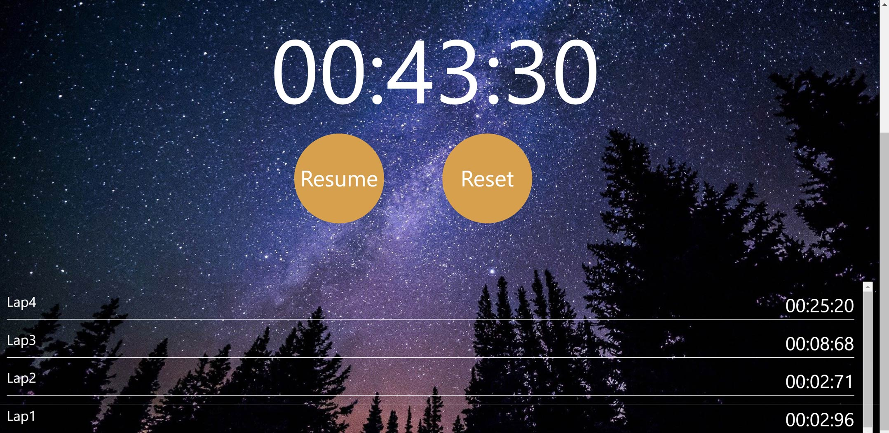

Keep track of time

Built with HTML, CSS, jQuery and Bootstrap. Once the page is loaded, we see two buttons, 'Start' and 'Lap'. If the 'Start' button is clicked, two counters start, the time counter and the lap counter. If we click on the 'Stop' button, both counters will stop. We can resume again by clicking on the 'Resume' button. If we click on the 'Lap' button, the lap time will restart from zero and we'll retrieve information about the previous lap. The lap number and the duration of that lap will print below. If we click again on the 'Lap' button, then we'll retrieve information again about the previous lap and another lap will start. If we 'Stop' the counters and click on the 'Reset' button, the page will reload and we'll start from scratch.
The Stopwatch App logic is as follows. If the 'Start' button is clicked, the counter will start, the 'Stop' and 'Lap' buttons will show and Stopwatch Mode will equal ON. If the 'Stop' button is clicked, the counter will stop and the 'Resume' and 'Reset' buttons will show. If the 'Resume' button is clicked, the counter will start and the 'Stop' and 'Lap' buttons will show.
If the 'Reset' button is clicked, the page will reload. If the 'Lap' button is clicked, the lap counter will restart and the details of the previous lap will print. The 'Lap' button can be clicked as many times as a user requires and each lap's details will print below in a scrollable element.